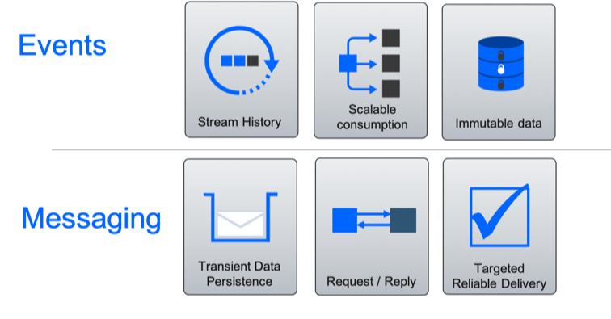

Fit for purpose
In this note we want to list some of the criteria to consider and assess during an event-driven architecture establishment work and as part of a continuous application governance. This is not fully exhaustive, but give good foundations for analysis and study. Fit for purpose practices should be done under a bigger program about application development governance and data governance. We can look at least to the following major subject:
Cloud native applications
With the adoption of cloud native and microservice applications (12 factors app), the following needs to be addressed:
- Responsiveness with elastic scaling and resilience to failure. Which leads to adopt the 'reactive manifesto' and consider messaging as a way to communicate between apps. Elastic also may lead to multi cloud deployment practice.
- Address data sharing using a push model to improve decoupling, and performance. Instead of having each service using REST end point to pull the data from other services, each service push the change to their main business entity to a event backbone. Each future service which needs those data, pull from the messaging system.
- Adopting common pattern like command query responsibility segregation to help implementing complex queries, joining different business entities owned by different microservices, event sourcing, transactional outbox and SAGA.
- Addressing data eventual consistency to propagate change to other components versus ACID transaction.
- Support always-on approach with the deployment to multiple data centers (at least three) being active/active and being able to propagate data in all data centers.
So the net: do we need to implement event-driven microservices because of those needs?
Modern data pipeline
As new business applications need to react to events in real time, the adoption of event backbone is really part of the IT toolbox. Some existing deployment consider this to be their new data hub, where all the data about the 'customer' is accessible. Therefore, it is natural to assess the data movement strategy and offload some of those ETL jobs running at night, as most of those works are done already inside of the applications generating those data, but not those data are visible inside the backbone.
We detailed the new architecture in this modern data lake discussion, so from a fit for purpose point of view, we need to assess what those ETL jobs were doing and how much of those data is now visible to other to consume.
With Event Backbone like Kafka, any consumer can join the consumption at any point of time, within the retention period. So if new data is kept like 10 days, within those 10 days a consumer can continuously get the data, no more wait for the next morning, just connected to the topic you need to.
MQ Versus Kafka
Consider queue system. like IBM MQ, for:
- Exactly once delivery, and to participate into two phase commit transaction
- Asynchronous request / reply communication: the semantic of the communication is for one component to ask a second command to do something on its data. This is a command pattern with delay on the response.
- Recall messages in queue are kept until consumer(s) got them.
Consider Kafka as pub/sub and persistence system for:
- Publish events as immutable facts of what happen in an application
- Get continuous visibility of the data Streams
- Keep data once consumed, for future consumers, for replay-ability
- Scale horizontally the message consumption
Direct product feature comparison
| Kafka | IBM MQ |
|---|---|
| Kafka is a pub/sub engine with streams and connectors | MQ is a queue, pub/sub engine with file transfer, MQTT, AMQP and other capabilities |
| All topics are persistent | Queues and topics can be persistent or non persistent |
| All subscribers are durable | Subscribers can be durable or non durable |
| Adding brokers to requires little work (changing a configuration file) | Adding QMGRs requires some work (Add the QMGRs to the cluster, add cluster channels. Queues and Topics need to be added to the cluster.) |
| Topics can be spread across brokers (partitions) with a command | Queues and topics can be spread across a cluster by adding them to clustered QMGRs |
| Producers and Consumers are aware of changes made to the cluster | All MQ clients require a CCDT file to know of changes if not using a gateway QMGR |
| Can have n number of replication partitions | Can have 2 replicas (RDQM) of a QMGR, Multi Instance QMGRs |
| Simple load balancing | Load balancing can be simple or more complex using weights and affinity |
| Can reread messages | Cannot reread messages that have been already processed |
| All clients connect using a single connection method | MQ has Channels which allow different clients to connect, each having the ability to have different security requirements |
| Data Streams processing built in, using Kafka topic for efficiency | Stream processing is not built in, but using third party libraries, like MicroProfile Reactive Messaging, ReactiveX, etc. |
| Has connection security, authentication security, and ACLs (read/write to Topic) | Has connection security, channel security, authentication security, message security/encryption, ACLs for each Object, third party plugins (Channel Exits) |
| Built on Java, so can run on any platform that support Java 8+ | Latest native on AIX, IBM i, Linux systems, Solaris, Windows, z/OS, run as Container |
| Monitoring by using statistics provided by Kafka CLI, open source tools, Prometheus | Monitoring using PCF API, MQ Explorer, MQ CLI (runmqsc), Third Party Tools (Tivoli, CA APM, Help Systems, Open Source, etc) |
Events and Messages
There is a long history of messaging in IT systems. You can easily see an event driven solution and events in the context of messaging systems and messages. However, there are different characteristics that are worth considering:
- Messaging: Messages transport a payload and messages are persisted until consumed. Message consumers are typically directly targeted and related to the producer who cares that the message has been delivered and processed.
- Events: Events are persisted as a replay-able stream history. Event consumers are not tied to the producer. An event is a record of something that has happened and so can't be changed. (You can't change history.)

Messaging versus event streaming
We recommend reading this article and this one, to get insight on messaging (focusing on operations / actions to be performed by a system or service) versus events (focusing on the state / facts of a system with no knowledge of the downstream processing).
To summarize messaging (like MQ) are to support:
- Transient Data: data is only stored until a consumer has processed the message, or it expires.
- Request / reply most of the time.
- Targeted reliable delivery: targeted to the entity that will process the request or receive the response. Reliable with transaction support.
- Highly Coupled producers and consumers
For events:
- Stream History: consumers are interested in historic events, not just the most recent.
- Scalable Consumption: A single event is consumed by many consumers with limited impact as the number of consumers grow.
- Immutable Data
- Loosely coupled / decoupled producers and consumers